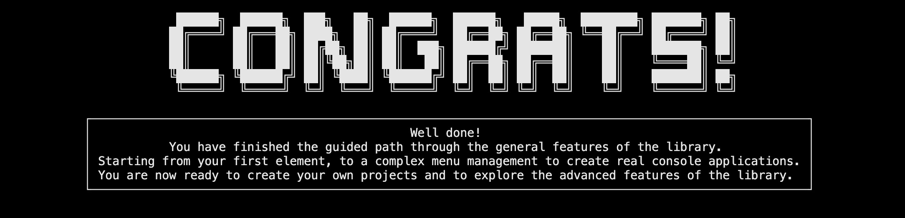

Next steps

Now, you can go further and explore the library by yourself. Here are the resources available:
- The elements and references sections where you can find all the features available in the library.
- The examples section where you can find some concrete examples to help you understand how to use the library in real use cases.
- The articles section where you can find some additional articles (create your element, use fonts, create your documentation, etc.).
Stay tuned! The release notes of the latest version are updated regularly. Consider checking it to see if there are any new features or bug fixes to stay up to date. Updating instructions are available here.
If you have any questions, feel free to ask them in the discussions section or open an issue (templates are available to help you).
Finally, feel free to share around you and star the library on GitHub if you like the project!